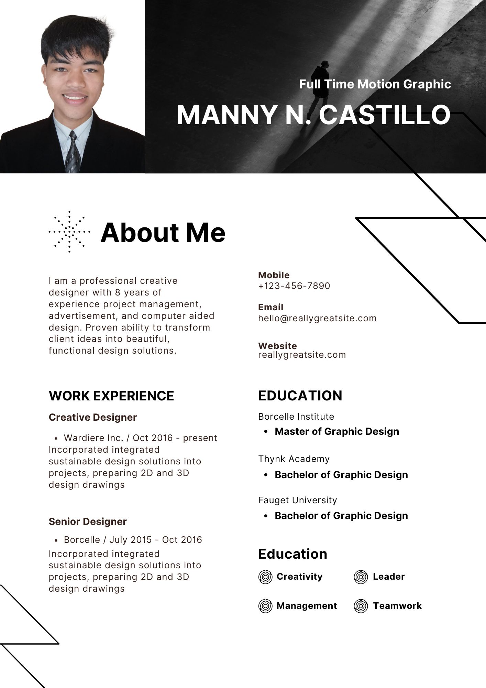
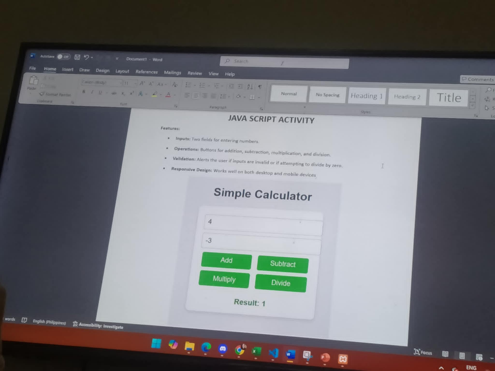

About Me
Hello! My name is Manny N. Castillo, and I am a Bachelor of Science in Information Technology Student at Cavite State University - Silang Campus. I am passionate about software
development, web design, and problem-solving. Currently, I am learning C++,Java and HTML, with a strong interest in front-end and back-end development.
My goal is to leverage technology to create innovative solutions that enhance user experiences and improve efficiency. I can contininuosly strive to expand my skills in programming
and software engineering.
My Skills
- HTML & C++ Programming
- Graphic Design
- Problem Solving & Logical Thinking
- Team Collaboration & Leadership
My Dreams
As a BSIT Student, i am driven by a passion for technology and problem-solving. My dream is to create meaningfull, innovative solutions that positively impact people's lives. I am especially drawn to software development
where i can leverage my skills in languages like C++, Java and HTML to build applications that make a difference.
Looking ahead, my ultimate goal is to contribute to groundbreaking projects, whether in web development, moile applications, while striving for excellence and pushing the boundaries of what technology can achieve.
With a growth mindset, I am continuously improving my technical skills and learning new concepts. I am excited about the future of technology and look forward to contributing my skills to impactful and innovative projects.
My Hobbies
- Photography üì∏
- Traveling üåç
- Reading üìö
- Online Gaming üéÆ
Projects

Click to view my Resume!
- Portfolio Website - A personal portfolio showcasing my skills and projects. I am Manny N. Castillo, a dedicated BSIT student at CvSU Silang Campus
with a strong passion for technology and software development. Currently, I am honing my skills in programming languages such as C++, Java, and HTML.
Throughout my studies, I have developed a keen interest in problem-solving and creating user-friendly applications, demonstrated through projects like a Java-based calculator.
My portfolio showcases my ability to apply theoretical knowledge into practical projects, while continuously learning and improving my technical skills.
I am eager to further expand my expertise and contribute to the tech industry by creating innovative and impactful solutions.

Click here to use the Calculator!
- Web calculator - A functional web-based calculator using JavaScript..This project is a simple calculator application built using Java,
designed to perform basic arithmetic operations such as addition, subtraction, multiplication, and division. The calculator features a user-friendly graphical interface (GUI) that allows users to input numbers and select operations easily. The program utilizes Java's Swing framework for the GUI, and its core functionality is implemented through event-driven programming. The project demonstrates the use of Java's object-oriented principles, including classes, methods, and exception handling,
to ensure smooth operations and prevent runtime errors, providing an efficient tool for performing quick calculations.
- IT Profession - My dream in the IT field is to become a software developer who creates innovative solutions that make a real impact on people's lives. I aspire to work on cutting-edge technologies, such as artificial intelligence, machine learning, and web development, and contribute to building applications that solve complex problems. Ultimately, I aim to be part of a dynamic team that values collaboration, creativity, and continuous learning. By leveraging my skills and passion for technology, I hope to make meaningful contributions to the tech industry and help shape the future of technology for a better tomorrow.